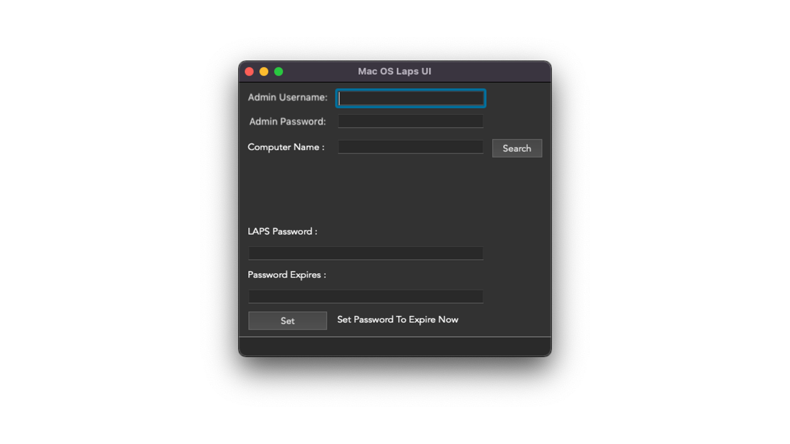

Justin Reeves
Justin ReevesmacOS LAPS UI
A Mac app that lets technicians look up and rotate local admin passwords without handing out a shared admin account.
The problem
Every Mac in the Jamf Pro-managed fleet needs a local admin account for support work. If that password is shared across machines, one leak exposes all of them. Each Mac needed its own password that changes on a schedule, and technicians needed a safe way to get it when they were at a desk helping someone.
What I built
I built a Python-based LAPS (Local Administrator Password Solution) for macOS, then gave it a simple app so technicians never had to touch a script. It works like this:
- The technician signs in with their own admin credentials.
- They enter a computer name and select Search.
- The app shows that Mac's current local admin password and when it expires.
- If the password has been used or shared, they select Set to expire it now, so it rotates on the next check-in.

Why it mattered
Every Mac got a unique admin password that rotates on its own, and technicians could still get into any machine they were supporting. Passwords never had to be written down or sent around, and any password that was exposed could be rotated right away.